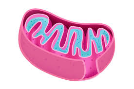

O que é a Mitocôndria?
A mitocôndria é uma organela encontrada em quase todas as células eucarióticas, conhecida como a "usina de energia" da célula. Sua principal função é gerar ATP (adenosina trifosfato), a principal moeda energética das células, através do processo de respiração celular.
Estrutura da Mitocôndria
As mitocôndrias possuem uma estrutura complexa composta por:
- Membrana Externa: Uma camada lipídica dupla que envolve a mitocôndria, contendo proteínas que facilitam a troca de moléculas entre o citoplasma e o espaço intermembranar.
- Membrana Interna: Forma dobras chamadas cristas, que aumentam a área superficial para as reações químicas. Esta membrana é rica em proteínas que participam na cadeia respiratória e na síntese de ATP.
- Espaço Intermembranar: A região entre a membrana externa e a membrana interna onde ocorre o transporte de elétrons e o bombeamento de prótons.
- Matéria Mitochondrial: Fluído dentro da membrana interna onde ocorrem o Ciclo de Krebs e outras reações metabólicas. Contém enzimas, DNA mitocondrial e ribossomos.
Função da Mitocôndria
A principal função das mitocôndrias é a produção de ATP por meio da respiração celular. Este processo pode ser dividido em três fases principais:
- Glicólise: Acontece no citoplasma e resulta na produção de piruvato, que é transportado para a mitocôndria.
- Ciclo de Krebs (ou Ciclo do Ácido Cítrico): Ocorre na matriz mitocondrial e converte o piruvato em CO2 e transportadores de elétrons reduzidos (NADH e FADH2).
- Transporte de Elétrons e Fosforilação Oxidativa: Acontece nas cristas mitocondriais, onde os elétrons são transportados através de uma cadeia de proteínas, gerando um gradiente de prótons que impulsiona a produção de ATP.
Além da produção de ATP, as mitocôndrias estão envolvidas em processos como a regulação do ciclo celular, a apoptose (morte celular programada) e a homeostase do cálcio.
Importância da Mitocôndria na Saúde e Doenças
As mitocôndrias são essenciais para a saúde celular e, portanto, para o bem-estar geral. Disfunções mitocondriais podem levar a uma série de doenças e condições:
- Doenças Mitocondriais: São um grupo de distúrbios genéticos e adquiridos que afetam a função mitocondrial e podem resultar em problemas musculares, neurológicos e metabólicos.
- Envelhecimento: A produção de ATP e a capacidade antioxidante das mitocôndrias diminuem com a idade, contribuindo para o processo de envelhecimento e o desenvolvimento de doenças associadas.
- Câncer: Alterações na função mitocondrial podem influenciar o desenvolvimento e a progressão do câncer, afetando o metabolismo celular e a resposta a terapias.
Comparação com Outras Organela Energéticas
Embora as mitocôndrias sejam conhecidas por sua função na produção de energia, outras organelas também desempenham papéis energéticos:
- Cloroplastos: Em células vegetais e algumas algas, os cloroplastos realizam a fotossíntese para produzir glicose e oxigênio a partir de luz solar, água e CO2. A energia armazenada na glicose pode ser utilizada pelas mitocôndrias para gerar ATP.
- Peroxissomos: Organela envolvida no metabolismo de lipídios e na detoxificação de peróxidos, contribuindo para a manutenção da homeostase celular e, indiretamente, para o equilíbrio energético.
A função de cada organela reflete a diversidade de estratégias que as células utilizam para manter a produção de energia e a homeostase.